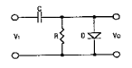
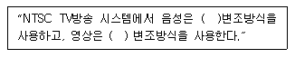
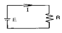
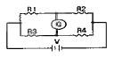
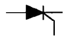
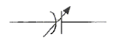
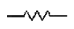
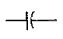
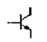
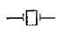

전자캐드기능사 (2011-07-31 기출문제)
1과목: 전기전자공학(대략구분)
1. 다음 중 노치필터에 해당되는 것은?
- 대역통과 필터
- 저역통과 필터
- 고역통과 필터
- 대역차단 필터
(정답률: 37%)

2. 상보 대칭식 SEPP 회로에서는 크로스오버 일그러짐 (Crossover distortion)을 제거 하기 위한방법은?
- A급 증폭을 시킨다.
- AB급 증폭을 시킨다.
- C급 증폭을 시킨다.
- D급 증폭을 시킨다.
(정답률: 48%)
3. 일그러짐이 가장 적어 저주파 증폭기에 주로 사용되는 전력증폭기는?
- A급
- B급
- AB급
- C급
(정답률: 51%)
4. 전류의 실효값이 10[A]이고 주파수가 60[㎐]인 사인파 전류의 순시값 표시는?
- i(t)=10sin120πt
- i(t)=10sin377πt
- i(t)=10√2sin120πt
- i(t)=10√2sin377πt
(정답률: 69%)
5. 6[㎌]와 4[㎌] 콘덴서 2개 직렬로 연결하면, 합성 용량[㎌]은?
- 1.2
- 2.4
- 3.6
- 4.8
(정답률: 75%)
6. 다음과 같은 회로의 명칭은?

- 클램프(Clamper) 회로
- 슬라이서(Slicer)회로
- 클리퍼(Clipper)회로
- 리미터(limiter)회로
(정답률: 64%)
7. 다음 중 부궤환 증폭회로의 설명으로 틀린 것은?
- 대역폭이 감소한다.
- 주파수 특성이 개선된다.
- 일그러짐이 감소한다.
- 부하의 변동에 안정적이다.
(정답률: 52%)
8. 다음 중 발전기의 원리와 밀접한 것은?
- 줄의 법칙
- 비로사르바르의 법칙
- 오른 나사의 법칙
- 플레이밍 오른손 법칙
(정답률: 68%)
9. 다음 중 터널 다이오드(tunnel diode)의 주 용도는?
- 정전압 회로
- 정류 회로
- 발진 회로
- 복조 회로
(정답률: 39%)
10. 다음 ( ) 안에 들어갈 내용이 순서대로 적합한 것은?

- 진폭, 진폭
- 위상, 주파수
- 주파수, 주파수
- 주파수, 진폭
(정답률: 66%)
11. 그림과 같은 회로에서 저항 R의 값이 2[Ω]일 때 3[A]의 전류가 흐르고, 저항 R의 값 이 4[Ω]일 때 2[A]의 전류가 흘렀다. 기전력 E는?

- 6[V]
- 8[V]
- 12[V]
- 48[V]
(정답률: 41%)
12. 발진 주파수를 측정할 수 있는 계측기와 거리가 먼 것은?
- 주파수 계수기(Frequency Counter)
- 오실로스코프(Oscilloscope)
- 파워미터(Power Meter)
- 스펙트럼 분석기(Spectrum Analyzer)
(정답률: 56%)
13. 다음과 같은 브리지회로의 평형 조건은?

- R1×R2=R3×R4
- R1×R4=R2×R3
- R1+R2=R3+R4
- R1+R4=R2+R3
(정답률: 60%)
14. 전압 증폭도가 100인 무궤환 증폭회로에서 궤환율 β=0.01의 부궤환을 걸어줄 경우, 증폭도는?
- 10
- 30
- 50
- 100
(정답률: 32%)
15. 다음 중 발진 주파수가 변동되는 주요 원인에 속하지 않는 것은?
- 부하의 변동
- 전원전압의 변동
- 주위 온도의 변화
- 대기압의 변화
(정답률: 59%)
2과목: 전자계산기일반(대략구분)
16. 순서도를 작성하는 일반적인 규칙이 아닌 것은?
- 약속된 표준 기호를 사용한다.
- 흐름에 따라 오른쪽에서 왼쪽으로 그린다.
- 기호 내부에 처리 내용을 간단, 명료하게 기술한다.
- 한 면에 다 그릴 수 없거나 연속적인 표현이 어려울 때는 연결 기호를 사용한다.
(정답률: 84%)
17. 마이크로프로세서를 이용하여 회로를 설계할 때 생기는 장점이 아닌 것은?
- 소비전력의 증가
- 제품의 소형화
- 시스템 신뢰성 향상
- 부품의 수량 감소
(정답률: 68%)
18. 컴파일러형 언어의 설명으로 틀린 것은?
- 원시 프로그램의 수정 없이 계속 반복 수행하는 응용 시스템에서 효율적이다.
- FORTRAN, COBOL, C, 어셈블리어 등이 있다.
- 목적 프로그램을 만든다.
- 고급언어와 관련된 번역 프로그램이다.
(정답률: 46%)
19. 정보를 중앙처리장치에서 기억장치로 기억시키는 것을 무엇이라 하는가?
- load
- store
- fetch
- transfer
(정답률: 65%)
20. 디코더(decoder)는 일반적으로 어떤 게이트를 사용하여 만들 수 있는가?
- NAND, NOR
- AND, NOT
- OR, NOR
- NOT, NAND
(정답률: 67%)
21. 마이크로프로세서의 구성 요소가 아닌 것은?
- 누산기
- 연산장치
- 입력장치
- 레지스터
(정답률: 51%)
22. 주소 지정방식 중 명령어의 피연산자 부분에 데이터의 값을 저장하는 방식은?
- 즉시 주소지정 방식
- 절대 주소지정 방식
- 상대 주소지정 방식
- 간접 주소지정 방식
(정답률: 50%)
23. 10진수 234에 대한 9의 보수로 옳게 변환한 것은?
- 764
- 765
- 766
- 777
(정답률: 57%)
24. 클록펄스가 인가되면 입력신호가 그대로 출력에 나타나고, 클록펄스가 없으면 출력은 현 상태를 그대로 유지하는 플립플롭은?
- RS 플립플롭
- JK 플립플롭
- D 플립플롭
- T 플립플롭
(정답률: 45%)
25. 패리티 비트(parity bit)의 사용 목적은?
- 에러(error) 정정
- 에러(error) 검사
- 데이터 전송
- 데이터 수신
(정답률: 68%)
26. 컴퓨터 중앙처리장치(CPU)의 내부에서 기억 장치내의 정보를 호출하기 위해 그 주소를 기억하고 있는 제어용 레지스터는?
- 상태 레지스터
- 프로그램 카운터
- 메모리 주소 레지스터
- 스택 포인트
(정답률: 42%)
27. 주기억장치를 보조기억장치와 비교 설명한 것으로 틀린 것은?
- CPU가 간접 접근한다.
- 데이터를 직접 처리한다.
- 접근시간이 빠르다.
- 구입 단가가 높다.
(정답률: 47%)
28. 다음 중 탄소막이 있어, 도체의 전기적인 흐름을 방해하는 작용을 하는 소자는?
- 코일
- 저항
- 콘덴서
- 트랜스포머
(정답률: 79%)
29. 폴리에스테르나 폴리마이드 필름에 동박을 접착한 기판으로 일반적으로 절곡 하여 휘어지는 부분에 사용하게 되는 기판은?
- 페놀 기판
- 에폭시 기판
- 콤퍼지트 기판
- 플렉시블 기판
(정답률: 80%)
30. 콘덴서에 “101K"라고 씌어있을 때 정전용량 값과 허용 오차로 옳은 것은?
- 0.0001[㎌], ±10[%]
- 0.001[㎌], ±0.25[%]
- 0.1[㎌], ±0.25[%]
- 0.0022[㎌], ±20[%]
(정답률: 65%)
3과목: 전자제도(CAD) 이론(대략구분)
31. 트랜지스터에 2SC1815Y라고 씌어 있을 때 C가 의미하는 것은?
- PNP형 고주파용
- PNP형 저주파용
- NPN형 고주파용
- NPN형 저주파용
(정답률: 65%)
32. 다음 중 일반적으로 전자 CAD를 이용하여 할 수 없는 기능은?
- 전원을 표시할 수 있다.
- 부품의 심벌을 작도할 수 있다.
- 기판의 외형을 설계할 수 있다.
- 전자제품의 케이스 가공용 데이터를 출력할 수 있다.
(정답률: 55%)
33. 다음 그림의 기호(심벌)는?

- 트라이액(TRIAC)
- 다이오드(DIODE)
- 발광다이오드(LED)
- 실리콘제어 정류기(SCR)
(정답률: 66%)
34. 다음 기호의 명칭은? (문제 복원 오류로 정답은 2번입니다. 보기 내용을 다시는 분들께서는 오류 신고를 통하여 보기 내용 작성 부탁드립니다.)

- 복원 중
- 가변 콘덴서
- 복원 중
- 복원 중
(정답률: 80%)
35. 다음 중 극성을 갖고 있고, 안정적인 대용량 전원 공급을 위해 사용되는 소자는?
- 세라믹 콘덴서
- 브리지 다이오드
- 전해 콘덴서
- 저항
(정답률: 76%)
36. PCB 인쇄 기판 제조 공정에 사용되는 에칭 방법이 아닌 것은?
- 납 마스크법
- 사진 부식법
- 실크 스크린법
- 오프셋 인쇄법
(정답률: 51%)
37. 전자 부품 선정시 고려 사항이 아닌 것은?
- 온도 특성
- 외형 치수
- 사용 유효기간
- 주파수 특성
(정답률: 58%)
38. 다음의 도면 종류 중에서 분류 방법이 다른 것은?
- 회로도
- 승인도
- 부품도
- 조립도
(정답률: 61%)
39. 다음 CAD용 소프트웨어로써 사용목적이 다른 것은?
- AutoCAD
- CADSTAR
- OrCAD
- PCAD
(정답률: 64%)
40. 다음 전자 캐드의 약어 중 옳지 않은 것은?
- CAM : Computer Aided Manufacturing
- CAD : Computer Aided Design
- CAE : Computer Aided Epoxy
- DRC : Design Rule Check
(정답률: 68%)
41. 다음 중 각종 단위의 크기가 옳지 않은 것은?
- 1[㎓]=109[㎐]
- 1[GByte]=109[Byte]
- 1[㎊]=10-12[F]
- 1[㏁]=106[Ω]
(정답률: 49%)
42. 제도의 척도 중 실물의 크기보다 작게 그리는 것은?
- 실척
- 축척
- 배척
- NS
(정답률: 82%)
43. 전자기기의 패널을 설계 제도할 때 유의해야 할 사항으로 옳은 것은?
- 전원 코드는 배면에 배치한다.
- 패널 부품은 크기를 고려하지 않고 배치한다.
- 조작 빈도가 낮은 부품은 패널의 중앙이나 오른쪽에 배치한다.
- 장치의 외부와 연결되는 접속기가 있을 경우 가능한 패널의 위에 배치한다.
(정답률: 55%)
44. 다음 중 회로도의 설계 순서로 옳은 것은?
- 부품의 참조번호 지정→회로도면 디자인→도면의 오류검사→설계도면의 저장
- 회로도면 디자인→부품의 참조번호 지정→도면의 오류검사→설계도면의 저장
- 부품의 참조번호 지정→도면의 오류검사→회로도면 디자인→설계도면의 저장
- 회로도면 디자인→도면의 오류검사→부품의 참조번호 지정→설계도면의 저장
(정답률: 59%)
45. 어느 제도의 척도가 1:1로 표기되었을 경우 다음 중 무엇을 의미하는가?
- 축척
- 현척
- 배척
- NS
(정답률: 77%)
46. 도면에서 도면의 축소나 확대, 복사의 작업과 이들의 복사 도면을 취급할 때 편의를 위하여 표시하는 것은?
- 윤곽선
- 도면의 비교눈금
- 도면의 구역
- 재단마크
(정답률: 59%)
47. 회로 도면 작성에 대한 결과 파일이며, PCB 설계의 입력 데이터로 사용되는 필수 파일로 패키지 명, 부품 명, 네트 명, 네트와 연결된 부품 핀, 네트와 핀, 부품 속성 등에 대한 정보를 갖고 있는 파일로 옳은 것은?
- 보고서(Report) 파일
- 네트리스트(Netlist) 파일
- 거버(Gerber) 파일
- 데이터 변환(DXF) 파일
(정답률: 70%)
48. 두 도체로 된 전극 또는 금속편 사이에 각종 유전 물질을 채운 부품은?
- 코일
- 콘덴서
- 저항
- 다이오드
(정답률: 61%)
49. 다음 중 도면의 효율적 관리를 위해 마이크로 필름을 이용하는 이유가 아닌 것은?
- 종이에 비해 보존성이 좋다.
- 재료비를 절감시킬 수 있다.
- 통일된 크기로 복사 할 수 있다.
- 복사 시간이 길지만 복원력이 높다.
(정답률: 64%)
50. 반도체 소자의 동작 원리 중 반도체의 온도가 올라가면 반송자의 수가 증가하여 도전율이 증가하며 저항이 작아지는 소자, 즉 온도에 따라 저항 값이 변화하는 소자는?
- Diode
- Varistor
- Thermistor
- Transistor
(정답률: 48%)
51. 수정(Crystal) 진동자의 심벌로 옳은 것은?




(정답률: 83%)
52. 부품 선정시의 핵심사항과 가장 거리가 먼 것은?
- 부품의 단가
- 납품의 조건
- 부품외형의 색상
- 부품의 신뢰성
(정답률: 77%)
53. 도면관리 방법에 대한 설명 중 옳지 않은 것은?
- 트레이스도는 접어서 보관한다.
- 제품의 종류 및 형식에 따라 알기 쉽게 분류한다.
- 마이크로 필름을 사용하여 도면의 복원력을 높일 수 있다.
- 도면은 필요할 때마다 쉽게 찾아볼 수 있도록 잘 정리하여 보관한다.
(정답률: 71%)
54. PCB 패턴설계 시 유의사항에 대한 설명 중 옳지 않은 것은?
- 패턴은 가급적 굵고 짧게 한다.
- 기판에서 하나의 접지 점을 정하는 1점 접지방식으로 설계한다.
- 패턴사이의 간격을 떼어 놓거나 차폐시킨다.
- 용량, 주파수, 신호형태에 관계없이 기판과 커넥터를 통합하여 설계한다.
(정답률: 64%)
55. 다음 전자 소자 중 수동 소자는?
- 다이오드
- 트랜지스터
- 용량기
- 집적회로
(정답률: 59%)
56. artwork 필름을 제작할 때, PCB 제조 공정에서의 치수 변화를 보정하는 작업을 무엇이라 하는가?
- repairing
- plotting
- scaling
- modifying
(정답률: 59%)
57. 인쇄회로 기판 PCB 제조 공정에서 등사 원리를 이용하여 내산성 레지스터를 기판에 직접 인쇄하는 방법으로 양산성은 높으나 정밀도가 다소 떨어지는 공정법은?
- 사진 부식법
- 오프셋 인쇄법
- 빛 감광법
- 실크 스크린법
(정답률: 41%)
58. 고주파를 사용하는 회로도를 설계 시 유의할 점이 아닌 것은?
- 배선의 길이는 될 수 있는 대로 짧아야 한다.
- 유도될 수 있는 고주파 전송 선로는 다른 신호선과 평행하게 한다.
- 배선이 꼬인 것은 코일로 간주되므로 주의해야 한다.
- 회로의 중요 요소에는 바이패스 콘덴서를 붙여야 한다.
(정답률: 60%)
59. 전자 제도에서 장치와 장치 사이에 접속 상태나 기능을 알아보기 쉽게 하기 위해 도면에 기호나 실제의 모양을 배치하고, 이들 사이를 연결한 도면을 무엇이라고 하는가?
- 접속도
- 부품 배치도
- 패턴도
- 블록 다이어그램
(정답률: 49%)
60. 다음 중 도면으로부터 좌표를 읽어 들이는데 사용하며, 자기장이 분포되어 있는 평판 위치 검출기를 위치시켜 도면의 위치에 대응하는 X, Y 좌표를 입력하거나 원하는 명령어를 선택하는 주변기기는?
- 디지타이저
- 이미지 스캐너
- 레이저 프린터
- 포토 플로터
(정답률: 76%)